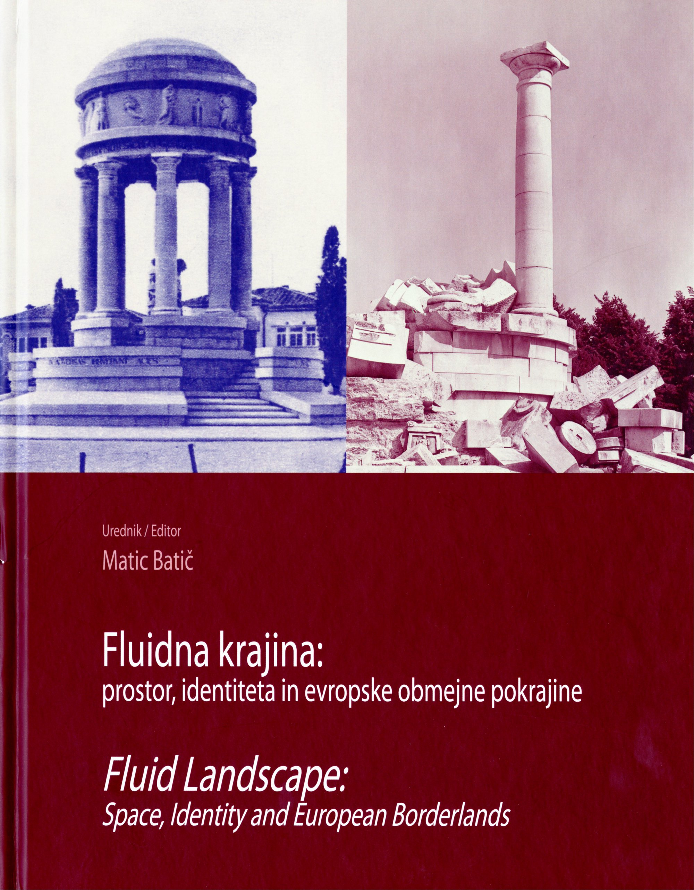

1Znanstvena monografija Fluidna krajina: prostor, identiteta in evropske obmejne pokrajine = Fluid Landscape : Space, Identity and European Borderlands obsega 296 strani, izdana je bila v založništvu Študijskega centra za narodno spravo leta 2024. Nastala je v okviru raziskovalnega projekta Fluid Landscape: Architecture, Identity and Border Space in the Northern Adriatic from 1943 to 1954 (cofunded by the Slovenian Research and Innovation Agency (ARIS)). Sestavljena je iz uvodnika urednika dr. Matica Batiča in sedmih prispevkov, zaključujeta ga dve recenziji in imensko kazalo. Prispevki v monografiji geografsko obsegajo severni Jadran, Južno Tirolsko in Trentino ter območja na severu in severovzhodu današnje Republike Slovenije. Ta so v prvi polovici 20. stoletja zaznamovali meddržavni spori, ko so območja prehajala izpod oblasti Habsburžanov med države zmagovalke prve svetovne vojne. Znanstvena monografija prikazuje, kako je nova oblast s posegi v kulturno in grajeno krajino prikazovala, legitimizirala svojo oblast in hkrati prevzgajala tamkajšnje prebivalstvo.
2Monografija je dvojezična, s prispevki vzporedno v slovenskem in angleškem jeziku. Uporaba slikovnega gradiva dodatno pritegne bralca. Uporabljene metode med drugim zajemajo pregled časopisja, analizo arhitekturnega jezika in pokrajine, imen ulic na Reki in v Šibeniku, uporabo slik in dokumentov ter diahrono perspektivo.
3Uvodno poglavje »Evropska 'fluidna' območja« avtorja dr. Matica Batiča vključuje časovni pregled obdobja, v katerem se tradicionalna družba pod vplivom modernizacije začne spreminjati; vzporedno so potekali vzpon nacionalizma, naraščanje pomena narodne identitete in demokratizacija političnega življenja. Avtor poudarja, da zgolj prisotnost mednarodnopravnih sporazumov v zgodovinskem kontekstu, ki so uveljavili nacionalno samoodločbo kot ključni vir legitimnosti političnih meja, ni zadostovala za zagotovitev suverenosti nad določenim ozemljem, če je tam živeče prebivalstvo ni priznavalo. Nova oblast si je s posegi v kulturno in dejansko krajino to prizadevala spremeniti. Avtor uporablja dva temeljna raziskovalna pristopa, ki presegata zgodovinopisje in umetnostno zgodovino v njunem tradicionalnem pomenu: prvi se osredotoča na prepoznavanje specifičnega značaja obmejnih območij, drugi pa temelji na raziskavah kulturne dimenzije prostora, vključno s študijami spomina in semiotiko.
4Avtorica Sophie Elaine-Wolf se v prispevku »Dve zgodbi o eni krajini: predstavljanje Južne Tirolske/Gornjega Poadižja v dveh regionalnih časopisih v medvojnem obdobju« osredotoča na razumevanje zgodovinskega in kulturnega značaja Južne Tirolske, kot je bilo izraženo v časopisnem diskurzu med nemškim in italijanskim taborom. Analizirano časopisje obsega Alpenzeitung, ki ga je izdajala italijanska fašistična vlada z namenom poitalijančevanja nemško govorečega prebivalstva, in na drugi strani Südtiroler Heimat, ki izraža trpljenje Severne Tirolske zaradi nepravične izgube ozemlja. V nadaljevanju je pozornost usmerjena v urbanistično in arhitekturno preobrazbo mesta Bolzano, nosilca političnega in upravnega središča. Posegi fašistov so vključevali oblikovanje nove mestne četrti, močne so bile tudi želje po spremenjeni podobi spomenikov (odstranitev kipa Waltherja von der Vogelweida, poškodba Laurinove fontane). Posegali so tudi v praznovanja in manifestacije, avtorica navaja primer spremembe praznika Srca Jezusovega. Ta je bil sprva prepovedan, z leti pa so ga fašisti preoblikovali, tudi s spremembo tradicionalnega simbola (gorečega kresa) v lastna, za fašizem pomembna praznovanja. Tako so poskušali običaju dati novo, italijansko simboliko. Avtorica zaključuje z mislijo, da so v kulturni bitki o gorečih kresovih (oziroma bitki kulturnega prilaščanja) fašisti izgubili.
5Dr. Klaus Tragbar se v prispevku »Postaji in pokrajina: dve različni zgradbi Angiola Mazzonija« osredotoča na izraznost novih železniških postaj v Trentu in Bolzanu, zgrajenih pod fašističnim režimom. Gre za povsem funkcionalne gradnje, ki so bile v duhu časa usmerjene v izražanje in poudarjanje italijanskosti ozemlja. Avtor analizira njun arhitekturni jezik, navezan na krajino, s poudarkom na strategijah, ki jih je izvajala Kraljevina Italija na novopridobljenih ozemljih. Železniški postaji sta bili za novo oblast preveč »avstrijski« in premalo reprezentativni. Pod vodstvom arhitekta Angiola Mazzonija sta bili preoblikovani. V nadaljevanju prispevka so navedeni posegi, ki jih je fašistična vlada izvajala v mestu Bolzano z namenom italijanizacije; iredentistične zamisli so namreč diktirale arhitekturne in urbanistične odločitve.
6V nadaljevanju dr. Damijan Hančič predstavlja arhitekturne prenove in pridobitve mesta Kamnik v času nacistične okupacije med drugo svetovno vojno. V prispevku, naslovljenem »Medvojne nacistične gradnje na Kamniškem: njihov nastanek, njihova 'transmisija' v povojnem socialističnem obdobju in njihova vloga danes«, je obravnavan kontekst germanizacije, ki vključuje prizadevanje za preoblikovanje pokrajine v bolj nemško. To so dosegli z uporabo značilne nacistične in alpsko-domačijske arhitekture. Novozgrajeni objekti so imeli simbolno vlogo in utilitaristični značaj. Nacistična preobrazba in gradnja objektov se delita na vojaško-obrambno (bunkerji, zaklonišča) in civilno, ta pa naprej na upravno in stanovanjsko. Avtor navaja tudi usode, ki so jih nacistične stavbe doživele v povojnem komunističnem režimu.
7Avtor Izidor Janžekovič v poglavju »Nacionalistične okoliščine odkritja staroslovanskega svetišča na Ptujskem gradu« predstavi zapleten proces odkritja zloglasnega objekta v povojnih letih v Jugoslaviji, med obsežnimi arheološkimi izkopavanji na zahodnem platoju ptujskega gradu. Pri tem izkopavanja umesti v kontekst povojne izgradnje Jugoslavije in nacije Jugoslovanov. Delo in ugotovitve arheologov in zgodovinarjev so vplivali na izgradnjo nove države. Ptujčani so se že poleti 1945 odločili, da se morajo najbolj zanimati za staroslovanske najdbe, ker Ptuj zaseda prvo mesto v staroslovanski arheologiji Slovenije, s tem pa je bilo povezano tudi financiranje ministrstva, ki je to stališče poudarjalo. Avtor opisuje proces izkopavanja na ptujskem gradu, v nadaljevanju pa pozornost posveti problematiki interpretacije objekta, ki so ga med izkopavanjem odkrili. Eden izmed vodilnih arheologov projekta, Josip Korošec, ga je interpretiral kot staroslovansko svetišče; občasno poimenovano tudi Objekt. Tej interpretaciji pa so drugi nasprotovali in jo poskušali ovreči. Prispevek bogato dopolnjuje korespondenca med arheologi, prisotnimi na izkopavanju, tehniškimi vodjami, Akademijo znanosti in umetnosti ter ministrstvom (za prosveto). Teza o svetišču je bila ovržena, kljub temu pa je debata o njem ostala in se ohranja še danes, na kar so pomembno vplivali tudi duh časa in razmere po drugi svetovni vojni.
8Avtor dr. Ivan Smiljanić si je za preučitev izbral odzive slovenske kulturne sfere na priključitev matičnega ozemlja (izgubljene Primorske) pod Kraljevino Jugoslavijo. Prostor v prispevku »Spomenik kot obtožba: študiji primerov ljubljanskih spomenikov med obema vojnama« opredeli kot medij kulturnega spomina, osredotoča pa se na dva spomenika, postavljena v Ljubljani v obdobju med 1920 in 1940. Gre za spomenik, imenovan Spominska plošča zasedenemu ozemlju, ki je bil postavljen leta 1921 pred Univerzo. Postavila ga je Jugoslovanska matica, društvo, ki je delovalo v pomoč in podporo zamejskim Slovencem. Spomenik je bil odkrit na isti dan, ko je potekalo italijansko praznovanje priključitve (20. marca 1921). Drugi obravnavani spomenik je postavila Soča, društvo primorskih emigrantov v Ljubljani. Odkrili so ga leta 1937, posvečen je bil primorskemu pesniku Simonu Gregorčiču, predstavljal pa je simbol slovenskih teženj po priključitvi Primorske. Spomenika sta eden od načinov, s katerimi so matični Slovenci javno izrazili svoj odziv na ozemeljske izgube in opozarjali na takratno stanje. Avtor prispevek zaključi z dejstvom, da je bila leta 2012 pred Univerzo odkrita nova plošča, posvečena bazoviškim žrtvam.
9Dr. Matic Batič se v poglavju z naslovom »Spreminjajoča se krajina« posveča trem različnim vidikom preobrazbe kulturne krajine na slovensko-italijanskem obmejnem območju, ki obsegajo krajevna imena, javne spomenike in arhitekturo. Na tem območju sta bili pomembni tudi samo poimenovanje in spreminjanje poimenovanja regije. Med vladavino Habsburžanov se je imenovalo Avstrijsko primorje (Österreichisches Küstenland). Po letu 1860 in pod italijansko oblastjo se je uveljavilo ime Julijska Benečija (Venezia Giulia). Po kapitulaciji Kraljevine Jugoslavije je nadzor nad območjem prevzela nacistična Nemčija, ki je območje preimenovala v Operativno cono Jadransko primorje (Operationszone Adriatisches Küstenland), po vojni pa je postalo znano kot Primorska ali Slovensko primorje.
10Dr. Piotr Mirocha v prispevku »Spreminjajoči se ulični krajini na Reki in v Šibeniku po drugi svetovni vojni« obravnava poimenovanje ulic v dveh nacionalno mešanih mestih na območju današnje Hrvaške, na Reki in v Šibeniku. Ugotavlja, da se je poimenovanje ulic prilagajalo vladajoči oblasti. Samo poimenovanje je pomembno oblikovala narodnostna in ideološka identiteta. Reka se je Jugoslaviji priključila šele po drugi svetovni vojni, v obdobju pred njo je bila več kot polovica prebivalstva italijanska, medtem ko so Italijani v Šibeniku predstavljali manjšino (okrog 6 odstotkov). Ulice in trgi so bili v Šibeniku uradno poimenovani šele v Kraljevini Srbov, Hrvatov in Slovencev (leta 1925). Avtor poimenovanje ulic v Šibeniku interpretira kot stapljanje hrvaške, dalmatinske in komunistične identitete v novooblikovano ulično krajino, prelome v poimenovanju pa kot poskus izbrisa nekaterih prvin simbolov, povezanih s partizanskim bojem med drugo svetovno vojno, medtem ko se drugi argumentirajo kot pomembni za preobražen simbolni univerzum. Na Reki italijanska identiteta ni bila izbrisana z mestnih ulic, temveč je bila preoblikovana s poudarkom na koncepte boja proti fašizmu. Avtor zaključuje z navajanjem podobne raziskave poimenovanja krajine (in urbanističnih enot) z mejnega območja Poljske in Nemčije.
11Vsebinski del monografije se zaključuje še z dvema recenzijama, ki izbor znanstvenih prispevkov lepo umestita v slovensko zgodovinopisje. Zapisala sta ju doc. dr. Simon Malmenvall s Teološke fakultete Univerze v Ljubljani in iz Slovenskega šolskega muzeja ter izr. prof. dr. Aleš Maver s Filozofske fakultete Univerze v Mariboru.
12Znanstvena monografija Fluidna krajina: prostor, identiteta in evropske obmejne pokrajine = Fluid Landscape: Space, Identity and European Borderlands predstavlja poglobljeno raziskavo prostora, časa in okolja glede na oblast. Bralcu ponuja interdisciplinaren pregled, angleški prevodi pa omogočajo, da je na voljo tudi širši publiki. Vključeno slikovno gradivo poskrbi za boljšo prostorsko predstavo, vpogled in ponazoritev grajene in naravne kulturne krajine.